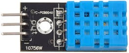

El DHT11 es un sensor digital que mide temperatura y humedad relativa de forma sencilla y fiable. Está diseñado con un conversor analógico-digital interno de 16 bits, y utiliza un protocolo digital propio para enviar la información al microcontrolador.
Este sensor integra:
- Un sensor resistivo de humedad capaz de medir entre 20% y 95% de humedad relativa.
- Un termistor NTC para medir temperaturas entre 0°C y 50°C.
Su salida es digital calibrada, lo que garantiza buena precisión y estabilidad en el tiempo.
-
Principio de funcionamiento
El DHT11 realiza internamente la conversión de las señales analógicas de temperatura y humedad en datos digitales. Cuando el ESP32 solicita una lectura, el sensor envía dos valores: temperatura en °C y humedad relativa en %.
-
Conexión al ESP32
En el entrenador QMT-020, el DHT11 se conecta normalmente de la siguiente forma:
- DATA: GPIO5 (entrada digital)
- VCC: 3.3V
- GND: Tierra
-
Lectura en MicroPython
Para usarlo en MicroPython:
- Importar la librería dht.
- Configurar el pin correspondiente como entrada digital.
- Inicializar el sensor y llamar a su método .measure() para actualizar los datos.
- Obtener la temperatura con .temperature() y la humedad con .humidity().
Ejemplo básico:
import dht import machine import time sensor = dht.DHT11(machine.Pin(5)) while True: sensor.measure() temp = sensor.temperature() hume = sensor.humidity() print("Temperatura:", temp, "°C") print("Humedad:", hume, "%") time.sleep(1)
-
Aplicaciones comunes
- Estaciones meteorológicas caseras.
- Sistemas de monitoreo ambiental.
- Control de ventilación y climatización.
- Automatización de invernaderos.
-
Buenas prácticas
- Evitar colocar el sensor cerca de fuentes de calor directo o humedad extrema.
- Esperar al menos 1 segundo entre lecturas para mejorar la precisión.
- Ubicarlo en un lugar con buena circulación de aire.